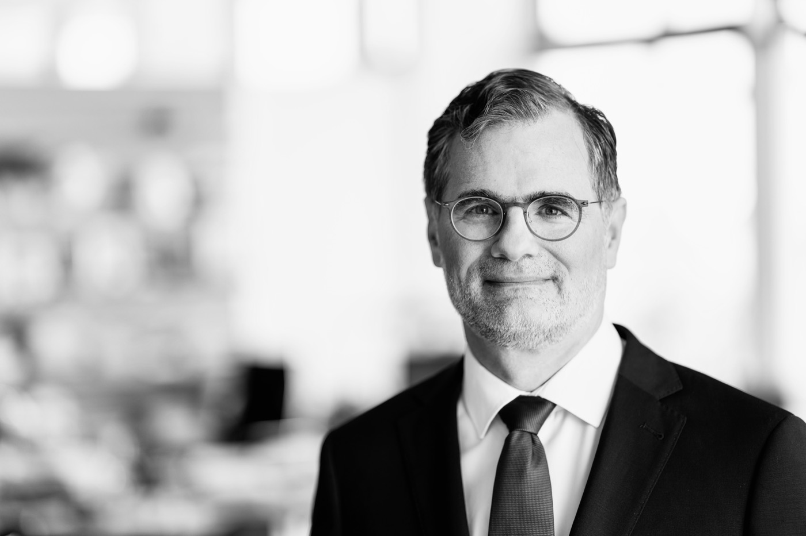
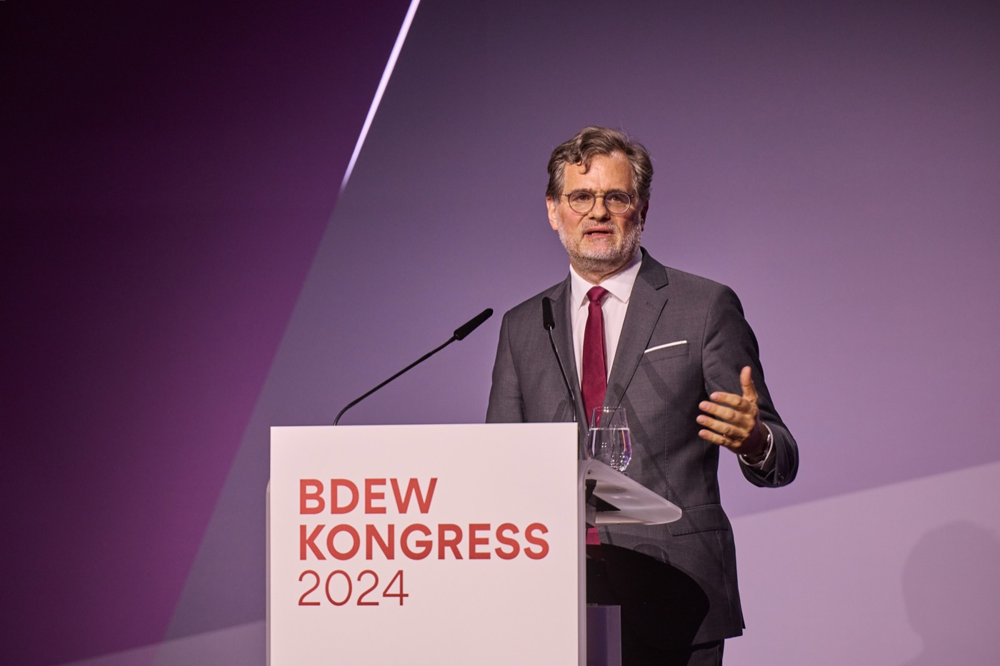
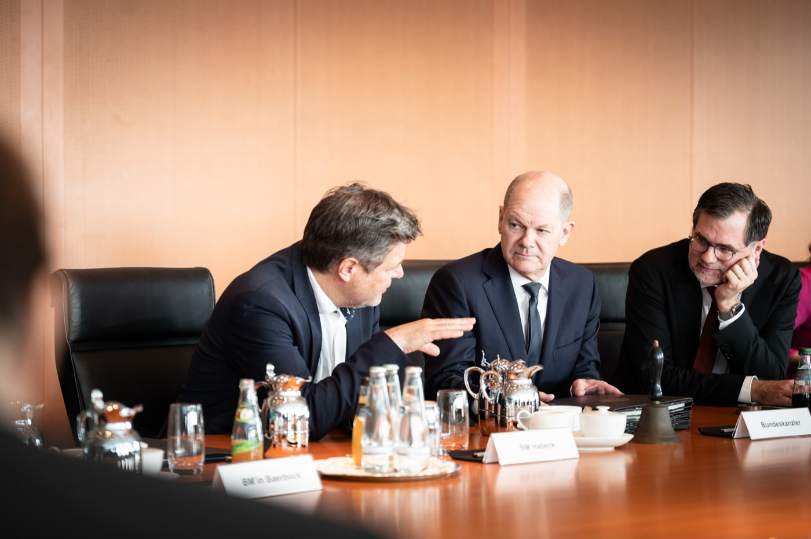
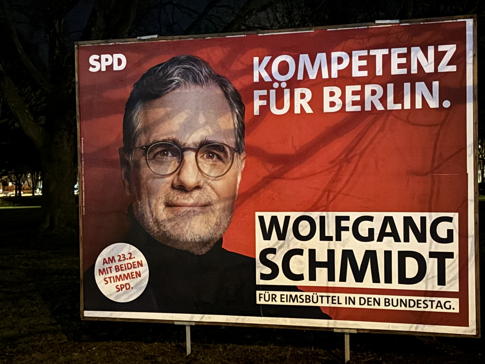

About Wolfgang Schmidt
Wolfgang Schmidt was born in Hamburg in 1970 and is based in Berlin. He works as an adviser and speaker on European and transatlantic affairs, economic, financial and security policy, and strategic decision-making in government and public administration. He brings more than two decades of political experience at federal and state level in Germany, across Europe and internationally — working closely with governments, parliaments, international organisations, businesses and academia.
He has worked alongside four US administrations and has been engaged with European institutions since his time as a member of the bureau of the youth organisation of the Party of European Socialists (PES). A central focus of his work is the strategic position of Europe vis-à-vis the United States, China and other global actors — and the question of how economic strength, technological sovereignty and security policy capacity interact and reinforce each other.

From December 2021 to 6 May 2025, Wolfgang Schmidt served as Federal Minister for Special Affairs and Head of the Federal Chancellery, as well as Commissioner for the Federal Intelligence Services, in the cabinet of Chancellor Olaf Scholz. He managed the day-to-day work of the federal government, maintained relations with the Bundestag and Germany's sixteen federal states, and was involved in all major political decisions at home and abroad. As a key coordinator of the three-party coalition of the SPD, Greens and FDP, he kept the partners aligned, prepared weekly cabinet meetings, and advised Chancellor Scholz on all strategically significant questions.
His tenure was shaped above all by Germany's support for Ukraine following Russia's full-scale invasion, and by the sweeping policy changes of the Zeitenwende — the historic shift in German foreign and security policy declared by Chancellor Scholz in February 2022 — including fundamental changes in defence spending, energy policy and industrial strategy. As Commissioner for the Federal Intelligence Services, he exercised the professional and legal supervision of the Federal Intelligence Service (BND) on behalf of the federal government and coordinated the work of Germany's intelligence agencies. He was a member of the Federal Security Council and closely involved in cross-departmental security policy. His portfolio covered national and international security, strategic foresight, and cooperation with partners in Europe, the transatlantic community and the Middle East. Alongside his work with the BND, close exchange with allied services at home and abroad shaped his role as intelligence coordinator.

From 2018 to 2021, Wolfgang Schmidt served as State Secretary at the Federal Ministry of Finance in the final cabinet of Chancellor Angela Merkel, responsible for fundamental questions of economic and fiscal policy, coordinating the SPD-led ministries, and liaising with the Federal Chancellery. This period encompassed Germany's economic response to the Covid-19 pandemic: Schmidt coordinated with Germany's sixteen states on protective measures and helped develop emergency support programmes for severely affected sectors — including culture and the hospitality industry. At the international level, he contributed to the G20's Debt Service Suspension Initiative (DSSI) and Common Framework, providing debt relief to developing countries during the pandemic. He represented Germany as G7 and G20 Deputy and as Alternate Governor at the World Bank and the Asian Infrastructure Investment Bank (AIIB), and served on the supervisory boards of Germany's main development agencies, GIZ and DEG.
From 2011 to 2018, Wolfgang Schmidt served as State Councillor and Plenipotentiary of the Free and Hanseatic City of Hamburg to the Federal Government, the European Union and for Foreign Affairs — making him Hamburg's effective representative in Berlin and Brussels. He coordinated Hamburg's work in the Bundesrat (Germany's upper chamber through which the sixteen states participate in federal legislation), represented Hamburg's interests vis-à-vis the federal ministries, and oversaw the Hamburg State Representation in Berlin and the Hanse-Office in Brussels. As the city's informal "foreign minister", he attracted high-profile international guests to Hamburg, coordinated EU structural funds and developed Hamburg's Nordic cooperation under the STRING framework. He chaired the Conference of European Affairs Ministers of the German States (EMK) in 2014/15 and played a central role in organising the G20 Summit in Hamburg in 2017. His responsibilities included Hamburg's city partnerships, among them Chicago, Shanghai, St. Petersburg, León, Dar es Salaam and Osaka.

Wolfgang Schmidt's political career has been closely intertwined with that of Olaf Scholz. When Scholz became SPD Secretary-General in autumn 2002, he brought Schmidt to Berlin. They worked together for more than twenty years — at SPD headquarters, in the SPD parliamentary group in the Bundestag, at the Federal Ministry of Labour and Social Affairs, in Hamburg, at the Federal Ministry of Finance, and finally in the Federal Chancellery. Throughout that time, Schmidt played a leading role in developing political strategy and running election campaigns.
Wolfgang Schmidt is a fully qualified lawyer. He studied law at the University of Hamburg and at the Universidad de Deusto in Bilbao, Spain. After his first state law examination he worked as a research assistant at the chair of Prof. Dr. Peter Behrens at the University of Hamburg, focusing on European law, international economic and private law, and competition law. Following his second state law examination in November 2002 — the bar qualification in Germany — he took on senior roles at SPD headquarters, in the SPD parliamentary group and at the Federal Ministry of Labour and Social Affairs, and served as Director of the ILO office in Berlin and from 2004 to 2008 as honorary Managing Director of the Norwegian-German Willy Brandt Foundation.

Wolfgang Schmidt has long-standing experience in foreign, security and defence policy debates. In 2010 he completed the six-month Senior Course at the Federal Academy for Security Policy (BAKS) and has been a member of the Globale Atlantiker (Global Atlanticists) since its founding in 2003 — a cross-party network of German and American politicians, advisers and academics convened by the Friedrich Ebert Foundation. He regularly speaks at international conferences on European security policy, transatlantic relations, German foreign policy, and economic and financial affairs.
Until September 2025 he served on the Foundation Board of the Munich Security Conference (MSC) and was Chair of its Board of Trustees. Until the end of 2025 he was Deputy President of the Foundation Council of the Stiftung Wissenschaft und Politik (SWP) — Germany's leading foreign and security policy think tank. He is a member of the Willy-Brandt-Kreis e.V., the Council of the European Council on Foreign Relations (ECFR), and the advisory board of the Baden-Baden Entrepreneurial Talks (BBUG). Through decades of work in government, international organisations and public administration, he has built a wide-ranging network spanning politics, business, academia and media.
Wolfgang Schmidt became politically active at an early age — as a student representative and in youth media (school newspaper, Democratic Youth Press Hamburg). He was involved in Hamburg's city partnership with León in Nicaragua, including youth exchange programmes. He has been a member of the SPD since 1989. He served on the national executive of the Jusos (the SPD's youth wing) and as Vice-President of the International Union of Socialist Youth (IUSY), then chaired by Antonio Guterres, and was a member of the bureau of ECOSY (today Young European Socialists). This early international engagement shaped his lifelong commitment to European integration and transatlantic cooperation.

At the federal election on 23 February 2025, Wolfgang Schmidt stood as the SPD's direct candidate in the Hamburg-Eimsbüttel constituency and as the party's lead candidate for Hamburg. At a moment when so much is at stake, he wanted to put his full energy behind the right policies and win a seat of his own. With nearly 43,000 first votes, he came second in the constituency — and narrowly missed entering the Bundestag on the party list as well.
He is the father of two adult daughters and speaks fluent English and Spanish in addition to German.
He holds a season ticket at FC St. Pauli — the Hamburg football club known as much for its fan culture and political identity as for its football — and attends matches whenever he can. He runs more or less regularly, plays football in an amateur team, and sails. Table football is a particular passion. He enjoys live music and goes to concerts.